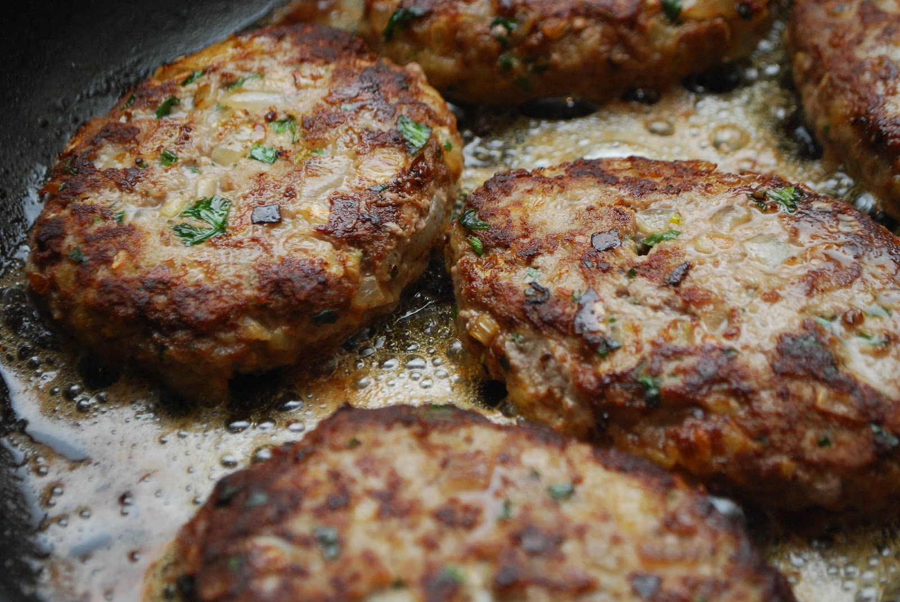

My grandparents on my mom side are from Germany, I have a great-aunt who currently lives there so they like to make us German food. It's really good and fun because they show us how it's made and let us help. My dad's side is from Poland so they show us a lot of polish food and me and my sisters like to make them with my dad. A lot of times we listen to music from each of the respective countries while we cook.

Frikadellen
Frikadellen
Frikadellen is kind of like a German meatball, except it's much bigger and filled with other spices.